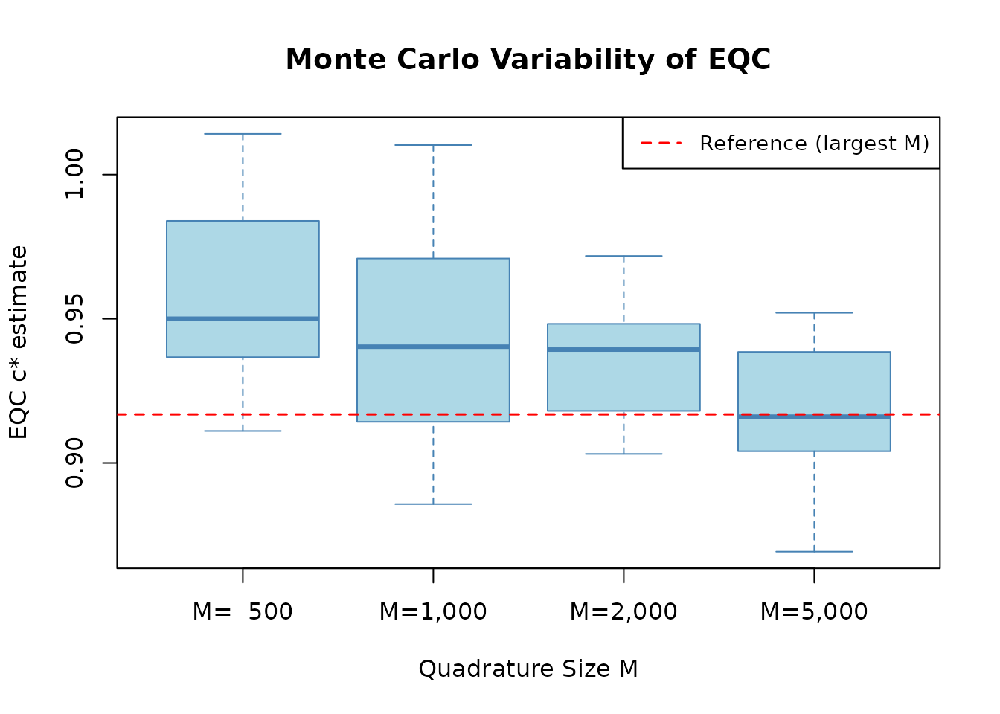
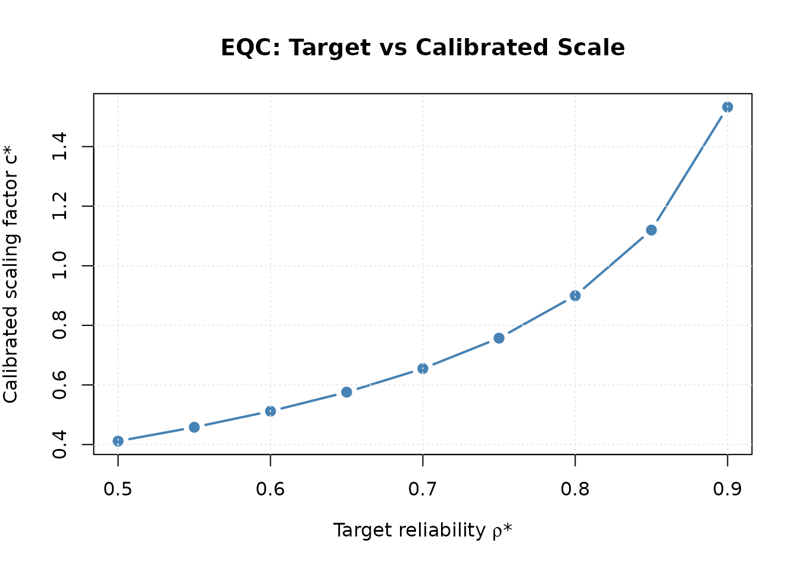

Algorithm 1: Empirical Quadrature Calibration (EQC)
JoonHo Lee (jlee296@ua.edu)
2026-08-22
Source:vignettes/algorithm-eqc.Rmd
algorithm-eqc.RmdOverview
Empirical Quadrature Calibration (EQC) is the primary algorithm in IRTsimrel for solving the inverse reliability problem. Given a target marginal reliability \rho^*, EQC finds a global discrimination scaling factor c^* such that a fixed-form empirical approximation to population average-information reliability equals the target.
Reading time: approximately 25 minutes.
Prerequisites: This vignette assumes familiarity
with the mathematical foundations developed in
vignette("theory-reliability"). For applied usage tutorials
and workflows, see vignette("introduction").
Key references: Lee (2026, arXiv:2512.16012v2), Sections 2.3–2.4; Brent (1973).
Why EQC is the Recommended Default
| Property | Benefit |
|---|---|
| Deterministic | Same inputs always produce same output (given seed) |
| Explicit topology | Detects multiple roots and local extrema before selection |
| No tuning parameters | No step sizes, learning rates, or burn-in to configure |
| Verified bracketing | Ordinary sign-changing crossings are locally polished when the bracket solver succeeds |
| Reproducible | Fixed theta nodes and item form for a given seed |
Algorithm Statement
EQC solves the scalar root-finding problem \hat{\rho}_M(c) = \rho^* using a three-step procedure.
Formal Algorithm
Algorithm 1 (Empirical Quadrature Calibration).
Input: Target reliability \rho^*, number of items I, latent distribution G, item parameter distribution H, quadrature size M, search bounds [c_L, c_U], tolerance \varepsilon.
Step 1 (Quadrature Sampling). Draw \{\theta_m\}_{m=1}^M \sim G and \{(\beta_i, \lambda_i^{(0)})\}_{i=1}^I \sim H. Fix these samples for all subsequent evaluations.
Step 2 (Empirical Reliability Function). Define \hat{\rho}_M : (0, \infty) \to (0, 1) by:
\hat{\rho}_M(c) = \rho\bigl(c;\, \{\theta_m\}_{m=1}^M,\, \boldsymbol{\beta},\, c \cdot \boldsymbol{\lambda}^{(0)}\bigr)
using the bracket-checked average-information reliability \tilde{\rho} (
reliability_metric = "info"/"tilde").Step 3 (Topology, Polishing, and Selection). Scan x=\log(c) adaptively on the exact interval [c_L,c_U], refine detected extrema and target features, polish every sign-changing bracket with Brent’s method, and select a root with
root_policy. The default selects the lowest increasing crossing.Output: Calibrated scaling factor \hat{c}^*_M, achieved reliability \hat{\rho}_M(\hat{c}^*_M), calibrated item parameters.
Why Fixed Quadrature?
A critical design choice is that the same Monte Carlo samples \{\theta_m\} and \{(\beta_i, \lambda_i^{(0)})\} are used for every evaluation of \hat{\rho}_M(c) during the root-finding iteration. This makes \hat{\rho}_M(c) a deterministic function of c for a given draw, which:
- Makes every scanner and root-polishing evaluation reproducible.
- Eliminates the need for step size tuning.
- Produces reproducible results for a given seed.
The trade-off is that the solution \hat{c}^*_M depends on the particular quadrature draw, introducing Monte Carlo error of order O(1/\sqrt{M}).
Adaptive Topology Scan and Brent Polishing
EQC does not call one global root solver and assume monotonicity. It
first constructs an adaptive log-scale map of the configured interval.
Boundaries, detected extrema, crossings, tangencies, and plateaus are
stored in result$misc$topology. Brent’s method (Brent,
1973) is then attempted locally for each sign-changing bracket.
Successfully polished ordinary crossings retain their solver diagnostic;
a near-target grid fallback is recorded separately when polishing
fails.
The interval is never expanded automatically. Topology is described as “detected at the configured resolution” because no finite grid can guarantee detection of an arbitrarily narrow feature between all sampled points.
Components of Brent’s Method
Brent’s method adaptively selects among three strategies at each iteration:
Bisection: Takes the midpoint of the current bracketing interval [a, b]. Always converges but is slow (linear rate).
Secant method: Uses linear interpolation between the two most recent points. Superlinear convergence rate of approximately \varphi \approx 1.618 (the golden ratio), but not guaranteed to stay within bounds.
Inverse quadratic interpolation (IQI): Fits a quadratic through the three most recent points (in the inverse direction). Under the usual smoothness and simple-root conditions, pure IQI has asymptotic order p \approx 1.8393, the positive root of p^3 = p^2 + p + 1.
At each step, Brent’s method:
- Attempts IQI or secant first (for speed).
- Falls back to bisection if the superlinear step would leave the bracket or make insufficient progress.
Convergence Properties
Proposition (Bracket contraction). Given a continuous function g on [a,b] with g(a)g(b)<0, the bisection safeguard can reduce the root-containing bracket to a requested scale-width tolerance in:
O\!\left(\log_2\!\left(\frac{b-a}{\varepsilon_c}\right)\right) \text{ iterations (worst-case bracket contraction)}
Here \varepsilon_c is a tolerance on root location or bracket width, not an automatic bound on |g(c)|. Continuity implies the residual tends to zero as the bracket contracts around a root, but a finite residual guarantee requires additional information such as a modulus of continuity or a local Lipschitz bound.
In practice, accepted interpolation steps often converge much faster than pure bisection. For pure IQI, the local error follows a three-step product recurrence under regularity conditions, yielding the superlinear order p \approx 1.8393 above. Brent’s hybrid retains the bisection safeguard; it does not have quadratic or doubly exponential convergence as a general guarantee.
Why Brent’s Method is Used Locally
Several properties of the reliability function make Brent’s method particularly well-suited:
Bracketed root: Every ordinary crossing passed to
uniroot()already has a verified local sign change. Several brackets may coexist.Smooth function: \hat{\rho}_M(c) is infinitely differentiable in c, enabling fast superlinear convergence.
No derivative needed: Unlike Newton’s method, Brent’s method does not require computing \partial \hat{\rho}_M / \partial c, avoiding the complexity of differentiating through the Monte Carlo sum.
Robustness: The bisection fallback prevents divergence even when the function has near-zero slope (high or low reliability regions).
Root policies and statuses
root_policy = "lowest_increasing" is the scientific
default: among detected positive-slope crossings it chooses the smallest
scale, avoiding an implicit switch to a high-scale saturation branch.
"nearest_increasing" uses c=1 as its reference.
"lowest_any" and "highest_any" are expert
policies that can select decreasing crossings; tangencies and plateaus
require separate explicit opt-in.
Feasibility, topology quality, root kind/direction, and calibration outcome are stored as separate fields. A boundary hit is not mislabeled as an interior root. If the target is outside the detected reliability range, EQC returns the best-achievable scale with an infeasibility warning. If a feasible target has no root admissible under the policy, or the topology is non-finite/unresolved, EQC raises a classed error.
Convergence Theory
The theoretical properties of EQC are established in Lee (2026),
Appendix A. Here we state the main results with proof sketches. For the
full notation and definitions, see
vignette("theory-reliability").
Consistency (Theorem A.1)
Theorem (Branch-conditional consistency of EQC). Let c^* be an isolated population solution \tilde{\rho}(c^*) = \rho^* on a specified increasing branch, and let \hat{c}^*_M be the matching EQC root with quadrature size M. Then, under the regularity and root-separation conditions below:
\hat{c}^*_M \xrightarrow{\text{a.s.}} c^* \quad \text{as } M \to \infty
Proof sketch. The argument proceeds in three steps:
Uniform convergence: By the Uniform Law of Large Numbers (ULLN), the empirical reliability function converges uniformly over the compact set [c_L, c_U]: \sup_{c \in [c_L, c_U]} |\hat{\rho}_M(c) - \rho(c)| \xrightarrow{\text{a.s.}} 0 This requires verifying that the family \{h_c(\theta, \boldsymbol{\beta}, \boldsymbol{\lambda})\}_{c \in [c_L, c_U]} satisfies a Lipschitz or bounded variation condition in c, which follows from the smoothness of the logistic function.
Local uniqueness of the root: On the population target branch described in Proposition 1 in
vignette("theory-reliability"), the equation \rho(c) = \rho^* has one isolated solution c^*. Other branches may contain other roots. The finite empirical implementation enumerates local brackets and applies the stated selection rule.Root convergence: Combining uniform convergence of the objective with uniqueness of the root, the Argmax Continuous Mapping Theorem (or its zero-finding analogue) yields \hat{c}^*_M \to c^* a.s.
Asymptotic Normality (Theorem A.2)
Theorem (Asymptotic Normality of EQC). Under regularity conditions:
\sqrt{M}\,(\hat{c}^*_M - c^*) \xrightarrow{d} N\!\left(0,\, \frac{\sigma^2_g}{g'(c^*)^2}\right)
where g(c) = \rho(c) - \rho^*, g'(c^*) = \rho'(c^*) is the slope of the reliability function at the solution, and \sigma^2_g is the asymptotic variance of \hat{g}_M(c^*).
Proof sketch. Apply the delta method (implicit function theorem version). By the CLT:
\sqrt{M}\,\hat{g}_M(c^*) \xrightarrow{d} N(0, \sigma^2_g)
Since \hat{c}^*_M solves \hat{g}_M(\hat{c}^*_M) = 0, a Taylor expansion around c^* gives:
0 = \hat{g}_M(\hat{c}^*_M) \approx \hat{g}_M(c^*) + g'(c^*)\,(\hat{c}^*_M - c^*)
Solving for \hat{c}^*_M - c^* and scaling by \sqrt{M} yields the result. The key requirement is g'(c^*) \neq 0, supplied by strict local monotonicity on the selected branch.
Monte Carlo Error Analysis
Practical implications. The asymptotic normality result (above) implies that the Monte Carlo standard error of \hat{c}^*_M is:
\text{SE}(\hat{c}^*_M) \approx \frac{\sigma_g}{\sqrt{M}\, |g'(c^*)|}
The reliability function’s slope |g'(c^*)| acts as an amplification factor: steeper slopes (smaller c^*, moderate reliability targets) produce smaller estimation errors, while flat slopes (extreme reliability targets near 0 or 1) produce larger errors.
For the reliability estimate itself, by the delta method:
|\hat{\rho}_M(\hat{c}^*_M) - \rho^*| = O_p\!\left(\frac{1}{\sqrt{M}}\right)
Numerical Stability
Stable log-information reductions
The probability and information kernels are evaluated with stable
logistic identities, including extreme linear predictors. Test
information is reduced on the log scale and MSEM uses log-sum-exp
arithmetic. The implementation does not impose a 1e-10
information floor: clipping would turn a divergent or under-resolved
reciprocal-information estimand into a plausible-looking finite number.
Non-finite diagnostics are surfaced instead.
Search Bound Sensitivity
The choice of [c_L, c_U] affects both feasibility and numerical behavior:
- Too narrow: The target \rho^* may fall outside the detected achievable range on $[c_L, c_U]`; EQC returns the best-achievable point with an explicit status and warning.
- Too wide: Finite-grid saturation can create additional extrema and crossings even for the information metric. The scanner enumerates them, but a wider interval costs more evaluations and makes the root policy important.
Default recommendation:
c_bounds = c(0.3, 3) works well for most applications.
Extend to c(0.1, 5) or c(0.1, 10) for
high-reliability targets (\rho^* >
0.90) or unusual item/latent configurations.
Edge Cases
| Scenario | Behavior | Recommendation |
|---|---|---|
| Target outside detected range | Returns best-achievable c with warning/status | Inspect misc$topology; revise design or
bounds |
| Several admissible roots | Selects by root_policy and records all
roots |
Report policy and selected direction |
| Tangency or plateau only | No default admissible root | Opt in only with a scientific justification |
| Scan budget/non-finite gap | Classed topology error | Inspect controls and estimand integrability |
n_items = 1 |
Very flat reliability curve | Use larger M for precision |
Reliability Metric Comparison
EQC targets the average-information reliability metric. The
MSEM-based metric is still important for interpretation and
cross-evaluation, but direct "msem" / "bar"
targeting is handled by SAC because the MSEM objective can be
non-monotone under scalar root finding.
Average-Information (rho-tilde):
reliability_metric = "info"
Advantages:
- Stable on practical EQC search intervals; on wider finite empirical bounds, EQC scans and refines all detected extrema before declaring infeasibility.
- Faster convergence of Brent’s method (steeper slope in typical range).
- Recommended by Lee (2026) as the default.
Interpretation: The coefficient obtained by applying
the reliability transform to average test information. On the same
finite information grid, Jensen’s inequality makes it an upper bound on
the MSEM-based coefficient. The two are distinct estimands; this
ordering is not a bias claim that one is the universal
"true" reliability.
MSEM-Based (w-bar): cross-evaluation, not EQC targeting
Advantages:
- MSEM-based reliability using the reciprocal-information approximation to conditional error variance.
- Accounts for heterogeneous measurement precision across \theta.
Caution: Can be non-monotone at extreme c values. Use
sac_calibrate(reliability_metric = "msem") for direct MSEM
targeting.
Jensen’s Gap in Practice
# Calibrate with EQC under the supported info metric
eqc_info <- eqc_calibrate(
target_rho = 0.80, n_items = 25, model = "rasch",
item_source = "parametric", reliability_metric = "info",
M = 5000L, seed = 42, verbose = FALSE
)
cat("Calibration with target rho* = 0.80:\n")
#> Calibration with target rho* = 0.80:
cat(sprintf(" Info metric: c* = %.4f, achieved = %.4f\n",
eqc_info$c_star, eqc_info$achieved_rho))
#> Info metric: c* = 0.8995, achieved = 0.8000
# Cross-evaluate: what does the EQC c* imply for both metrics?
both_at_info <- compute_rho_both(
eqc_info$c_star,
eqc_info$theta_quad,
eqc_info$beta_vec,
eqc_info$lambda_base,
theta_var = eqc_info$theta_var
)
cat("\nCross-evaluation of the EQC c*:\n")
#>
#> Cross-evaluation of the EQC c*:
cat(sprintf(" At c*_info = %.4f: rho_tilde = %.4f, rho_bar = %.4f\n",
eqc_info$c_star, both_at_info$rho_tilde, both_at_info$rho_bar))
#> At c*_info = 0.8995: rho_tilde = 0.8000, rho_bar = 0.7937
cat(sprintf(" Jensen gap: %.4f\n", both_at_info$rho_tilde - both_at_info$rho_bar))
#> Jensen gap: 0.00633PL calibration contract
For model = "3pl", specify lower asymptotes through
item_params$guessing_params (or
custom_params$guessing for a custom bank). At every
candidate scale EQC holds difficulty and guessing fixed and replaces
\lambda_i^{(0)} by c\lambda_i^{(0)}. Setting every guessing
value to zero reproduces the 2PL kernel and reliability calculation
exactly. Positive guessing generally requires a larger selected
discrimination scale for the same fixed-form target, but this is an
empirical design comparison rather than a universal root-ordering
theorem.
The symbol c in results and plots always denotes this
global scale. It never denotes the conventional 3PL lower asymptote;
documentation and output use guessing for the latter.
Diagnostic Examples
Monte Carlo Convergence Study
How does the EQC solution improve with quadrature size M?
M_values <- c(500, 1000, 2000, 5000)
n_reps <- 10
target <- 0.80
# Run multiple replications at each M
mc_results <- data.frame(
M = integer(), rep = integer(), c_star = numeric()
)
for (M_val in M_values) {
for (r in 1:n_reps) {
res <- eqc_calibrate(
target_rho = target, n_items = 25, model = "rasch",
item_source = "parametric", reliability_metric = "info",
M = as.integer(M_val), seed = 100 * r + M_val, verbose = FALSE
)
mc_results <- rbind(mc_results, data.frame(
M = M_val, rep = r, c_star = res$c_star
))
}
}
# Summary statistics
mc_summary <- aggregate(c_star ~ M, data = mc_results, FUN = function(x) {
c(mean = mean(x), sd = sd(x), min = min(x), max = max(x))
})
cat("Monte Carlo convergence of c* (target = 0.80, 25 Rasch items):\n")
#> Monte Carlo convergence of c* (target = 0.80, 25 Rasch items):
cat(sprintf(" %-8s %-10s %-10s %-10s\n", "M", "Mean c*", "SD(c*)", "Range"))
#> M Mean c* SD(c*) Range
for (i in seq_len(nrow(mc_summary))) {
vals <- mc_summary$c_star[i, ]
cat(sprintf(" %-8d %-10.4f %-10.4f [%.4f, %.4f]\n",
mc_summary$M[i], vals["mean"], vals["sd"],
vals["min"], vals["max"]))
}
#> 500 0.9565 0.0337 [0.9111, 1.0141]
#> 1000 0.9417 0.0392 [0.8858, 1.0102]
#> 2000 0.9362 0.0227 [0.9031, 0.9718]
#> 5000 0.9169 0.0256 [0.8693, 0.9521]
oldpar <- par(mar = c(4.5, 4.5, 3, 1))
on.exit(par(oldpar))
# Box plot of c* across M values
M_factor <- factor(mc_results$M,
labels = paste0("M=", format(M_values, big.mark = ",")))
boxplot(c_star ~ M_factor, data = mc_results,
col = "lightblue", border = "steelblue",
xlab = "Quadrature Size M", ylab = "EQC c* estimate",
main = "Monte Carlo Variability of EQC")
# Reference line at the grand mean
abline(h = mean(mc_results$c_star[mc_results$M == max(M_values)]),
lty = 2, col = "red", lwd = 1.5)
legend("topright", legend = "Reference (largest M)",
lty = 2, col = "red", lwd = 1.5, cex = 0.9)
Variability of EQC estimates decreases with quadrature size.
The standard deviation of \hat{c}^*_M decreases approximately as 1/\sqrt{M}, consistent with the theoretical prediction from Theorem A.2.
Sensitivity to Target Reliability
targets <- seq(0.50, 0.90, by = 0.05)
sensitivity <- data.frame(
target = targets,
c_star = numeric(length(targets)),
achieved = numeric(length(targets))
)
for (j in seq_along(targets)) {
res <- eqc_calibrate(
target_rho = targets[j], n_items = 25, model = "rasch",
item_source = "parametric", reliability_metric = "info",
M = 5000L, seed = 42, verbose = FALSE
)
sensitivity$c_star[j] <- res$c_star
sensitivity$achieved[j] <- res$achieved_rho
}
cat("EQC sensitivity to target reliability (25 Rasch items, info metric):\n")
#> EQC sensitivity to target reliability (25 Rasch items, info metric):
cat(sprintf(" %-8s %-10s %-10s %-10s\n",
"Target", "c*", "Achieved", "|Error|"))
#> Target c* Achieved |Error|
for (j in seq_len(nrow(sensitivity))) {
cat(sprintf(" %-8.2f %-10.4f %-10.4f %-10.6f\n",
sensitivity$target[j],
sensitivity$c_star[j],
sensitivity$achieved[j],
abs(sensitivity$achieved[j] - sensitivity$target[j])))
}
#> 0.50 0.4114 0.5000 0.000000
#> 0.55 0.4580 0.5500 0.000000
#> 0.60 0.5118 0.6000 0.000000
#> 0.65 0.5758 0.6500 0.000000
#> 0.70 0.6548 0.7000 0.000000
#> 0.75 0.7572 0.7500 0.000000
#> 0.80 0.8995 0.8000 0.000000
#> 0.85 1.1199 0.8500 0.000000
#> 0.90 1.5328 0.9000 0.000000
oldpar <- par(mar = c(4.5, 4.5, 3, 1))
on.exit(par(oldpar))
plot(sensitivity$target, sensitivity$c_star, type = "b",
pch = 19, col = "steelblue", lwd = 2,
xlab = expression("Target reliability " * rho * "*"),
ylab = expression("Calibrated scaling factor c*"),
main = "EQC: Target vs Calibrated Scale")
grid(col = "gray90")
Calibrated scaling factor as a function of target reliability.
Sensitivity to Latent Distribution Shape
shapes <- c("normal", "bimodal", "heavy_tail", "skew_pos")
shape_pars <- list(
normal = list(),
bimodal = list(delta = 0.9),
heavy_tail = list(df = 5),
skew_pos = list(k = 4)
)
cat("EQC c* for different latent shapes (target = 0.80, 25 Rasch items):\n")
#> EQC c* for different latent shapes (target = 0.80, 25 Rasch items):
for (sh in shapes) {
res <- eqc_calibrate(
target_rho = 0.80, n_items = 25, model = "rasch",
item_source = "parametric", reliability_metric = "info",
latent_shape = sh, latent_params = shape_pars[[sh]],
M = 5000L, seed = 42, verbose = FALSE
)
cat(sprintf(" %-12s: c* = %.4f, achieved = %.4f\n",
sh, res$c_star, res$achieved_rho))
}
#> normal : c* = 0.8995, achieved = 0.8000
#> Auto-wrapping shape parameter(s) {delta} into latent_params$shape_params.
#> bimodal : c* = 0.9605, achieved = 0.8000
#> Auto-wrapping shape parameter(s) {df} into latent_params$shape_params.
#> heavy_tail : c* = 0.9365, achieved = 0.8000
#> Auto-wrapping shape parameter(s) {k} into latent_params$shape_params.
#> skew_pos : c* = 0.9132, achieved = 0.8000Model Comparison: Rasch vs 2PL
eqc_rasch <- eqc_calibrate(
target_rho = 0.80, n_items = 25, model = "rasch",
item_source = "parametric", reliability_metric = "info",
M = 5000L, seed = 42, verbose = FALSE
)
eqc_2pl <- eqc_calibrate(
target_rho = 0.80, n_items = 25, model = "2pl",
item_source = "parametric", reliability_metric = "info",
M = 5000L, seed = 42, verbose = FALSE
)
cat("Model comparison (target = 0.80, 25 items, info metric):\n")
#> Model comparison (target = 0.80, 25 items, info metric):
cat(sprintf(" Rasch: c* = %.4f, achieved = %.4f\n",
eqc_rasch$c_star, eqc_rasch$achieved_rho))
#> Rasch: c* = 0.8995, achieved = 0.8000
cat(sprintf(" 2PL: c* = %.4f, achieved = %.4f\n",
eqc_2pl$c_star, eqc_2pl$achieved_rho))
#> 2PL: c* = 0.8637, achieved = 0.8000
cat(sprintf(" Rasch baseline lambda: %s\n",
paste(unique(round(eqc_rasch$lambda_base, 2)), collapse = ", ")))
#> Rasch baseline lambda: 1
cat(sprintf(" 2PL baseline lambda range: [%.2f, %.2f]\n",
min(eqc_2pl$lambda_base), max(eqc_2pl$lambda_base)))
#> 2PL baseline lambda range: [0.53, 2.08]Verbose Output Walkthrough
The verbose mode reveals the internal steps of EQC.
eqc_v <- eqc_calibrate(
target_rho = 0.80, n_items = 25, model = "rasch",
item_source = "parametric", reliability_metric = "info",
M = 5000L, seed = 42, verbose = TRUE
)
#> Step 1: Generating quadrature samples...
#> M (quad persons) = 5000
#> I (items) = 25
#> theta: mean = -0.014, sd = 1.005, var = 1.010
#> beta: mean = 0.000, sd = 0.861
#> lambda_base: mean = 1.000, sd = 0.000
#> metric = info
#> Step 2: Running root-finding algorithm...
#> At c = 0.300: rho = 0.3539, g = -0.4461
#> At c = 3.000: rho = 0.9550, g = 0.1550
#> c* = 0.899499
#> Target rho = 0.8000
#> Achieved rho = 0.8000
#> Root status = uniroot_successKey information from verbose output:
-
Observed range: Reports the scanned reliability
range inside
c_bounds. - Root topology: Reports detected root count, selected kind/direction, and scanner resolution status.
- Achieved reliability: Final reliability at the calibrated c^*.
Output Structure
The eqc_calibrate() function returns an object of class
"eqc_result" containing the calibration results.
# Key components
cat("EQC result components:\n")
#> EQC result components:
cat(sprintf(" c_star: %.4f (calibrated scaling factor)\n",
eqc_v$c_star))
#> c_star: 0.8995 (calibrated scaling factor)
cat(sprintf(" target_rho: %.2f (target reliability)\n",
eqc_v$target_rho))
#> target_rho: 0.80 (target reliability)
cat(sprintf(" achieved_rho: %.4f (achieved reliability)\n",
eqc_v$achieved_rho))
#> achieved_rho: 0.8000 (achieved reliability)
cat(sprintf(" metric: %s (reliability metric used)\n",
eqc_v$metric))
#> metric: info (reliability metric used)
cat(sprintf(" n_items: %d (number of items)\n",
length(eqc_v$beta_vec)))
#> n_items: 25 (number of items)
cat(sprintf(" M (quadrature): %d\n", length(eqc_v$theta_quad)))
#> M (quadrature): 5000Prediction and Downstream Use
The predict() method evaluates reliability at arbitrary
scaling factors using the stored quadrature samples.
# Evaluate reliability at different c values
c_query <- c(0.5, 1.0, 1.5, 2.0)
pred <- predict(eqc_v, newdata = c_query)
cat("Predict method: reliability at different c values\n")
#> Predict method: reliability at different c values
for (j in seq_along(c_query)) {
cat(sprintf(" c = %.1f: rho = %.4f\n", c_query[j], pred[j]))
}
#> c = 0.5: rho = 0.5897
#> c = 1.0: rho = 0.8260
#> c = 1.5: rho = 0.8972
#> c = 2.0: rho = 0.9280Connection to SAC Validation
For rigorous validation, EQC results should be cross-checked against the SAC algorithm using the same reliability estimand. The recommended workflow is:
- Run EQC as the primary calibration.
- Initialize SAC with the EQC result (warm start) and set
reliability_metric = "info". - Compare using
compare_eqc_sac().
See vignette("algorithm-sac") for the SAC algorithm
details and vignette("validation") for the complete
validation framework.
# Quick cross-validation example
sac_check <- sac_calibrate(
target_rho = 0.80, n_items = 25, model = "rasch",
reliability_metric = "info", resample_items = FALSE,
c_init = eqc_v, n_iter = 200L, M_per_iter = 1000L,
seed = 42, verbose = FALSE,
preflight_controls = list(M = 500L),
evaluation_controls = list(n_forms = 3L, M = 1000L)
)
comparison <- compare_eqc_sac(eqc_v, sac_check, verbose = FALSE)
cat(sprintf("EQC-SAC agreement: %.2f%% difference\n", comparison$diff_pct))
#> EQC-SAC agreement: 0.15% differenceSummary
EQC is the recommended primary algorithm for reliability-targeted IRT simulation:
| Aspect | Summary |
|---|---|
| Method | Adaptive log-scale topology scan plus local Brent polishing |
| Convergence | Root polishing is superlinear; statistical consistency is branch-conditional |
| Asymptotic rate | \sqrt{M}-normal (Theorem A.2) |
| Supported target metric | Average-information ("info" /
"tilde") |
| Accuracy | Depends on quadrature size and local slope; use independent holdout evaluation |
| Recommended M | 10,000 default; justify changes with sensitivity evidence |
| Validation | Cross-check with SAC via
compare_eqc_sac()
|
References
Lee, J.-H. (2026). Reliability-Targeted Simulation of Item Response Data: Solving the Inverse Design Problem. arXiv:2512.16012v2. https://doi.org/10.48550/arXiv.2512.16012
Brent, R. P. (1973). Algorithms for Minimization Without Derivatives. Prentice-Hall.
van der Vaart, A. W. (1998). Asymptotic Statistics. Cambridge University Press.